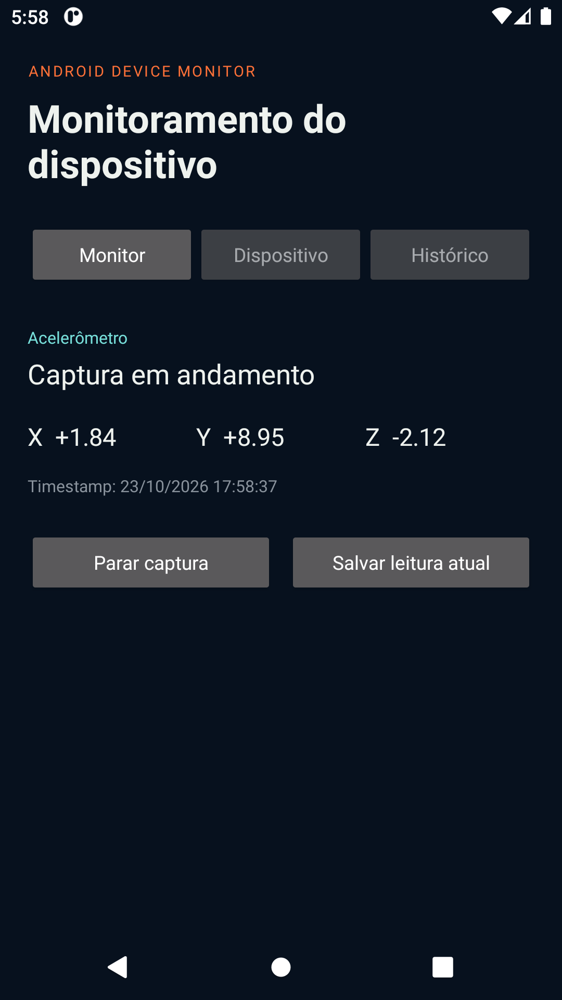
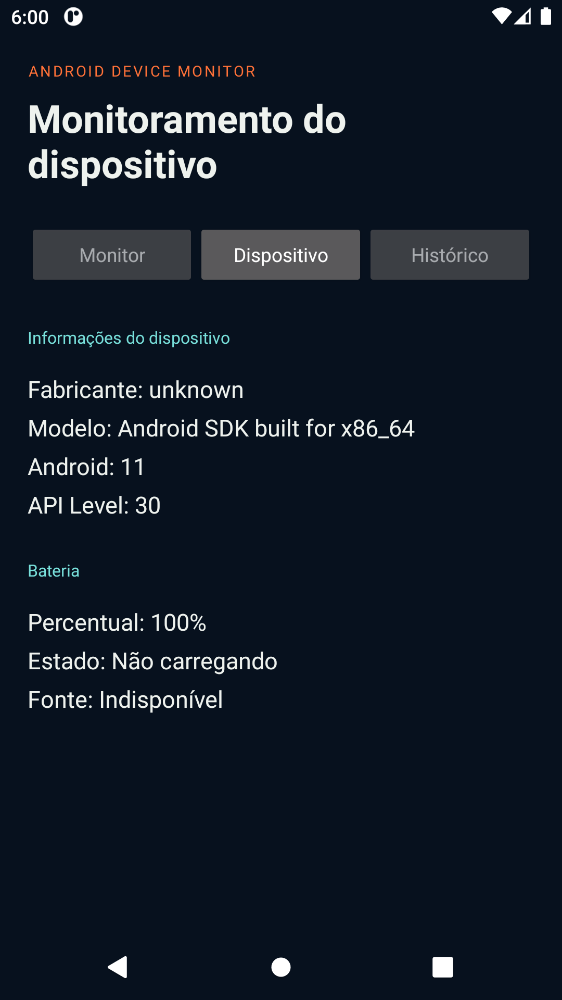
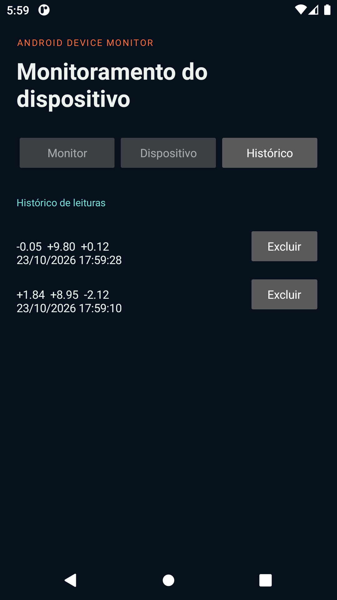

Coleta
Consultar APIs do Android e capturar informações efetivamente produzidas pelo aparelho.
avaliação técnica prática · prazo de 5 dias
Um desafio para desenvolver, em Kotlin, um aplicativo capaz de consultar o dispositivo, acompanhar sensores e registrar evidências de uso em uma interface funcional.
O Android Device Monitor é uma avaliação prática de desenvolvimento Android. O candidato deverá construir um aplicativo nativo que reúna informações do dispositivo, estado da bateria e leituras do acelerômetro.
A proposta exige dados reais, persistência local e uma apresentação capaz de explicar as decisões de implementação. O aplicativo deve funcionar sem conexão com a internet e continuar utilizável quando um recurso não estiver disponível.
Consultar APIs do Android e capturar informações efetivamente produzidas pelo aparelho.
Organizar valores de sensores e bateria em telas legíveis, com estados claros para o usuário.
Persistir leituras, testar comportamentos e documentar o procedimento de experimentação.
Os seis requisitos abaixo definem o comportamento mínimo esperado e orientam a análise da implementação durante a apresentação.
Exibir fabricante, modelo, versão do Android e API Level a partir de dados do próprio aparelho.
Informar percentual, carregamento e fonte de alimentação, sinalizando quando o dado estiver indisponível.
Permitir iniciar e interromper a captura, mostrar X, Y, Z e horário da leitura e liberar listeners no ciclo de vida.
Salvar uma leitura manualmente, consultar registros, excluir itens e preservar os dados após reiniciar o aplicativo.
Organizar informações do dispositivo, monitoramento e histórico com retorno funcional e estado consistente.
Responder com mensagens compreensíveis quando faltar sensor, falhar a persistência ou não houver registros.
Este é um exemplo de organização visual, não um gabarito. A implementação pode usar Compose ou Views, desde que preserve a clareza dos estados e das ações.
O cabeçalho informa que a captura está ativa e permite interrompê-la.
Valores X, Y e Z aparecem junto da unidade e do momento da coleta.
Salvar a leitura atual é uma ação visível, sem esconder o histórico.
Capturas reais do aplicativo Android nativo em execução, demonstrando os três painéis exigidos, persistência local e integridade de dados.

Captura contínua dos eixos X, Y e Z com timestamp cronológico real, status de execução e liberação automática de ciclo de vida.

Exibição real de fabricante, modelo, versão do Android, API Level, percentual de carga, fonte de alimentação e enum de domínio da bateria.

Persistência local segura com Room Database, listagem ordenada por timestamp, exclusão pontual e sobrevivência ao reinício do aplicativo.
MVVM é recomendado porque torna o fluxo de dados observável: a interface apresenta, o ViewModel coordena, o Repository centraliza e as fontes de dados conversam com o Android e o banco.
consultar decisões técnicas ↗A nota combina comportamento observável, domínio dos fundamentos, organização do código, testes, documentação e capacidade de argumentação.
A entrega deve permitir que outra pessoa instale, execute, compreenda e reproduza o caminho percorrido: repositório Git, APK, README, testes, relatório técnico e demonstração.
Registre leituras do acelerômetro em repouso e em movimento. Informe o procedimento, o número de amostras, um resumo dos resultados e as limitações observadas.
O material de apoio reúne documentação oficial para orientar decisões de arquitetura, APIs do Android, persistência, ciclo de vida e testes.
Passo a passo do contrato do produto até a validação final, com estrutura sugerida e checklist.
abrir guia ↗ ANDROID DEVELOPERSComo identificar sensores, registrar eventos, ler timestamps e controlar o ciclo de captura.
consultar documentação ↗ ANDROID DEVELOPERSCamadas de UI e dados, ViewModel, fonte única da verdade e fluxo unidirecional.
consultar documentação ↗ ANDROID DEVELOPERSEntidades, DAOs, banco local e a estratégia para manter leituras após reiniciar o aplicativo.
consultar documentação ↗ ANDROID DEVELOPERSComo isolar regras, usar JUnit e separar testes JVM de testes instrumentados.
consultar documentação ↗ KOTLINLANG.ORGReferência para sintaxe, coleções, corrotinas e APIs da linguagem exigida no desafio.
consultar documentação ↗ CÓDIGO DO PROJETOImplementação em Kotlin com acelerômetro, bateria, Room, histórico, navegação e testes unitários.
abrir código-fonte ↗documentação oficial do desafio